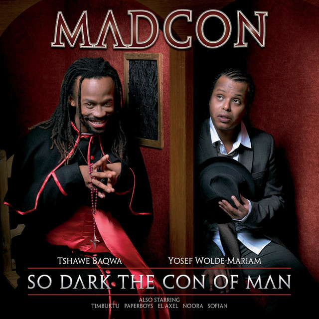
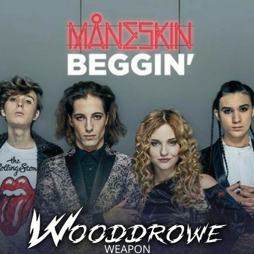
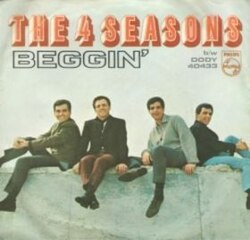

Beggin é uma música interpretada pelo grupo norueguês Madcon, lançada em 2007



A versão do Madcon não foi a primeira adaptação de Beggin. A música foi originalmente lançada pelo grupo The Four Seasons em 1967 e recebeu diversas versões ao longo dos anos.
Entre as versões mais conhecidas estão as de Madcon, lançada em 2007, e Måneskin, lançada em 2017. Outros artistas, como Timebox e Shocking Blue, também já gravaram a música.